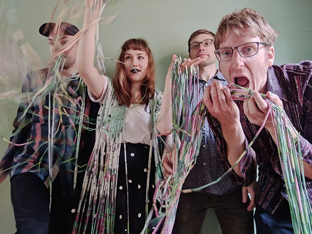

Interview: Detroit Avant-Pop Band saajtak Discusses the Importance of Improvisation to Their Creative Process
Today we catch up with the Detroit-based four-piece saajtak. The band met while studying at the University of Michigan, and formed in 2014, it includes vocalist Alex Koi, electronic musician Simon Alexander-Adams, bassist Ben Willis, and drummer Jon Taylor. Combining elements of avant-pop, electronic music, jazz, tragic opera–with aspects of prog and punk rock thrown in for good measure–saajtak has self-released several EPs including 2018’s “Hectic“, 2017’s “Spokes“, and their 2016 debut “spectral [drips]“. While the band’s members come from diverse musical backgrounds, the importance of improvisation is central to their approach–even as they amass a more stable body of compositional work. Currently writing music for their debut LP while getting ready to launch a ten day East Coast tour later this month, saajtak took time this month to answer some questions about how the band came together, their artistic influences, as well as the importance of improvisation to their creative process.
LETV: Hello saajtak. Thank you for taking some time to answer questions about your music. Before we delve into some specifics about your creative process, can you talk about how the band met and began playing together?
BW: We all met in Ann Arbor, MI, where we were students at University of Michigan. While our musical studies varied widely, from jazz, to classical, to electronic and multimedia work, what brought us together was our shared affinity for improvisation. We all played together in many different groups before this quartet coalesced into a lasting project.
AK: We rather organically developed into a 'band' in the sense of having consistent momentum with rehearsals and performances. One of the things I love about this project is that I think it satisfies an important part of each of our creative pallets, but also fuels our other creative endeavors outside of the group. It's a good territory of balance to exist in together, which is why I think we've seen so much growth and sustainability.
LETV: saajtak’s music is very intricate and often has an amazing amount of detail packed into each composition. What is it like to write music for the band and is there a song you can take us through that might be emblematic of the process?
SAA: A lot of our music began as improvisations. We record all of our rehearsals for both the purpose of capturing these improvisations and workshopping song ideas over time. Usually, the detail comes after we have defined a structure for the piece, and had time to explore it through successive rehearsals and performance. It really is an iterative process, and one where we are all responsible for refining our individual parts. While we might give each other thoughts or suggestions throughout the process, at the end of the day we all choose what to play in a given song.
“If You Ask” is a good example – it actually existed as two ideas for a while before we connected them. We had been playing around with the rhythmic patterns in the intro, and the melody in the middle for a few rehearsals before we tried putting them together. Usually, the transitions are what takes the most work, especially when moving between contrasting sections. It's important to us that transitions feel natural, and this can take a while to get right.
LETV: With improvisation being so important to the band’s process, what is the relationship between the band’s recorded material and your live performances? How do those two aspects intersect?
BW: For many of our pieces, they evolve very gradually over many months, or even years, before they feel like a finished piece. The live performance of our music, the energy that we receive from an audience, and between us in performance gives us a valuable perspective on where we should take things compositionally.
JT: There's definitely an ongoing dialogue between the two spaces. Ultimately we want the music to feel vital, which means we have to put fresh energy into every performance. It's easy to get locked into a fixed arrangement after recording a song, especially after listening to the same version hundreds of times. That runs counter to our instincts as improvisers and can drag us down on stage. As soon as something feels stagnant we have to go back to the drawing board and figure out how and where to infuse new life.
LETV: For the improvisation to happen well, what important traits and abilities should a band’s members possess? It seems quite difficult!
JT: Trust, personal rapport, presence and flexibility are indispensable. Being aware of all the sonic subtleties and making strong decisions, and then being willing to shift roles based on the changing landscape of the music allow for an organic and communicative experience. We all participate in various projects, often with no written or predetermined material, that depend on this level of love and awareness in order to keep the music from losing momentum. I think, at least in our rehearsals, we occupy a middle ground where we improvise with that same spontaneous creative energy, but also are conscious of part-writing and searching for ideas that will make up a compelling song.
LETV: The band’s music often seems to follow an intriguing narrative arc. Is this conscious or does it seem to arise out of your experience of playing together while composing?
BW: I think we all like music that is repetitive and trancelike, but also music that has extreme contrasts and widely different emotive spaces. For me, working out our compositions is sometimes a struggle between feeling like ideas have had enough space to settle, and finding an emotive variety.
SAA: Our narrative arcs are also a result of our process. Our process lends itself well to longer episodic forms that dip into many musical spaces and ideas. The compositional process is a give and take between playing freely and structuring improvised material. In this way, we are working to remain conscious during the process of improvisation.
LETV: As far your recorded music is concerned, what is that process like for the band? Is there a particular place you like to record? I noticed that both “Hectic” and “Spokes” were recorded by Adam Cox. How does that relationship contribute to the band’s recordings?
BW: Recording the “Hectic” EP with Adam was a breeze because he knew our sound and setup so well from recording us the year before. Adam is such a talented and creative musician in his own projects, as well as being a great engineer. Building collaborative relationships is an important part of how we like to work.
JT: We always record live and in the same space so that we can capture the communicative energy we depend at our shows. From there we can overdub as needed and shape and produce it so it sounds polished and whole. Getting that initial live core is key, though, and Adam knows exactly how to do that.
LETV: saajtak’s music definitely seems to draw from a lot of different influences. Can you talk about what inspires the band from a sonic as well as artistic perspective?
AK: Some people call us rock, some people call us avantpop, others call us jazz and occasionally we get "really-out" opera. Statements like these are probably most indicative of our influences. Some shared favorites are Meredith Monk, Brian Eno, clipping., Amon Tobin, Bjork, and Kate Bush. We recently each made a list of ten albums we wanted to use as guiding principles for saajtak and there was quite a lot of overlap! We may be slightly morphing into one another over time.
LETV: This year you released a new EP via Bandcamp called “Hectic”. It’s your third release. How has the band grown and changed since your first improvised release, “Spectral [drips]” back in 2016?
BW: In earlier shows, we did a lot more improvising freely in live sets. That has shifted over the years, partly because we've developed more composed material to play, and this band is our way of presenting that. We all continue to improvise together in other contexts. Lately, we have been making space in our live sets to improvise more. Ultimately this band is the resulting voice of the four of us, more than it is a projected idea of what we should sound like.
LETV: What’s next for the band? Do you have some new recordings that you’re working on? How about touring plans?
AK: We're in a writing stage currently with about three songs almost completed, and a bunch more in the works. Gearing up for our debut full length and maybe some smaller releases beforehand. We're doing a 10-day tour this October to the East coast as well.